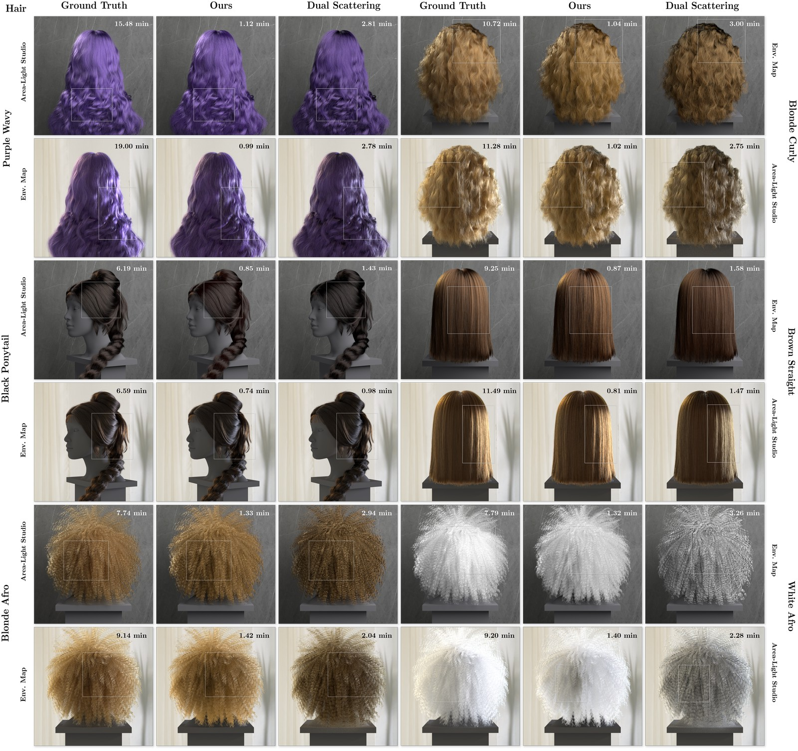
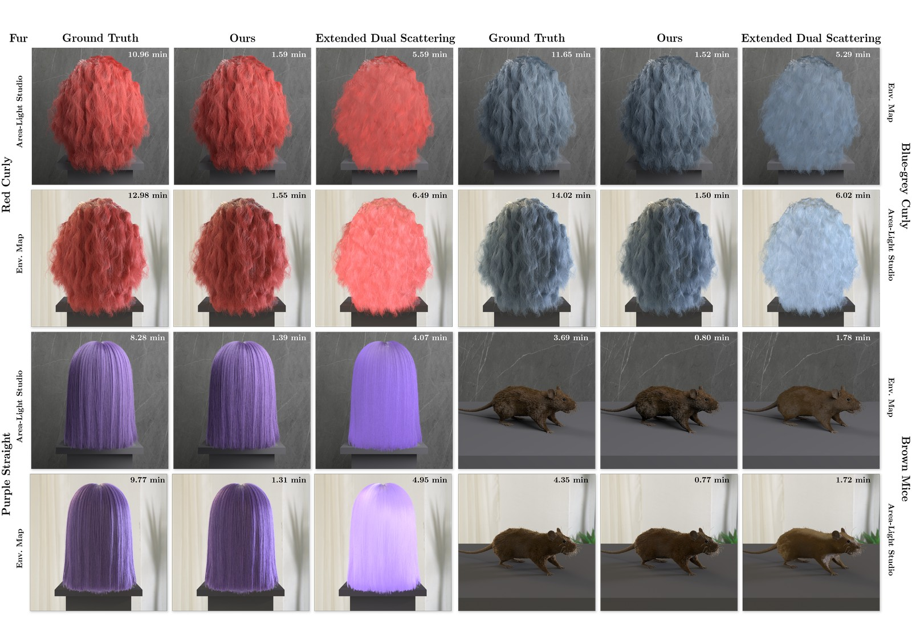
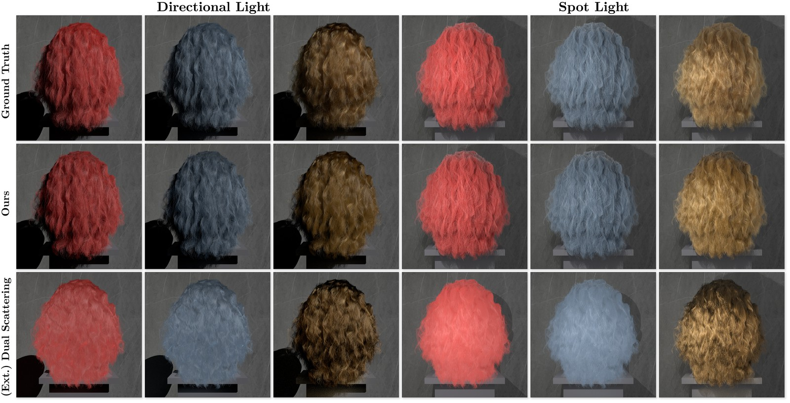

Efficient Fur and Hair Multiple Scattering
Using Volumetric Approximation
Abstract
In this paper, we propose an efficient method for hair and fur rendering that approximates multiple scattering as volumetric light transport, achieving near path-traced visual fidelity at a drastically reduced cost. Multiple scattering among hair fibers is crucial for a realistic appearance, especially for light-colored hair, but it is extremely expensive to simulate directly. Prior approximations, such as dual scattering and fur BSSRDF, improve performance but often fail for dense hair/fur, yielding an overly dry or blurred appearance. Unlike previous volumetric hair rendering solutions, we treat dense hair/fur as a highly anisotropic participating medium to capture soft volumetric illumination, while still using explicit fiber geometry for direct lighting to preserve fine details. We accumulate hair fiber coverage in screen space and stochastically sample a single-scattering event to approximate higher-order scattering. Our method reproduces the rich appearance of hair and fur resulting from multiple scattering, while running about 7–10× faster than path tracing, making it suitable for use in production. We also demonstrate that our approach is robust under a variety of lighting conditions.
Hair Rendering Results

Rendering results for diverse hair models under studio and environment lighting. Our method demonstrates higher visual fidelity to the ground truth reference compared to the dual scattering model across all tested cases.
Fur Rendering Results

Rendering results for diverse fur models under studio and environment lighting. Our method demonstrates higher visual fidelity to the ground truth reference compared to the extended dual scattering model across all tested cases.
Directional and Spot Light Results

Comparison of our method against ground truth and dual scattering under directional and spot lights. The red and blue-gray curly hair is rendered using a fur model with extended dual scattering, while the blonde one uses a hair model with standard dual scattering.
BibTeX
@article{Hu2026EfficientFurHair,
title={Efficient Fur and Hair Multiple Scattering Using Volumetric Approximation},
author={Ruike Hu and Junqiu Zhu and Minghao Lin and Ruian Zhang and Lu Wang and Jie Guo and Yanwen Guo and Lingqi Yan},
journal={ACM Transactions on Graphics},
volume={45},
number={4},
articleno={92},
year={2026},
month={7},
doi={10.1145/3811343},
url={https://github.com/NJUCG/efficient-fur-hair-ms-vol-approx}
}